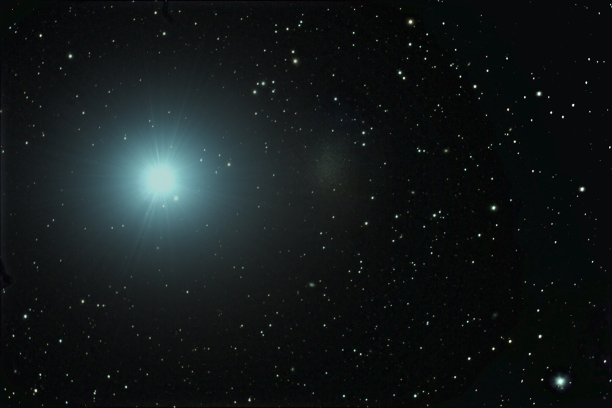
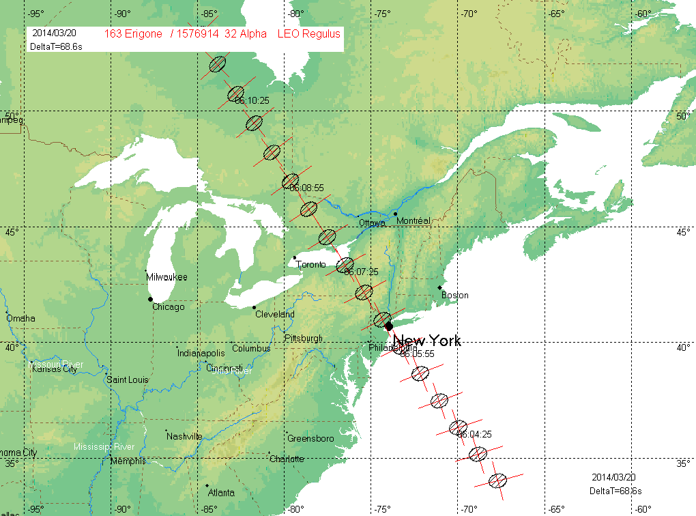
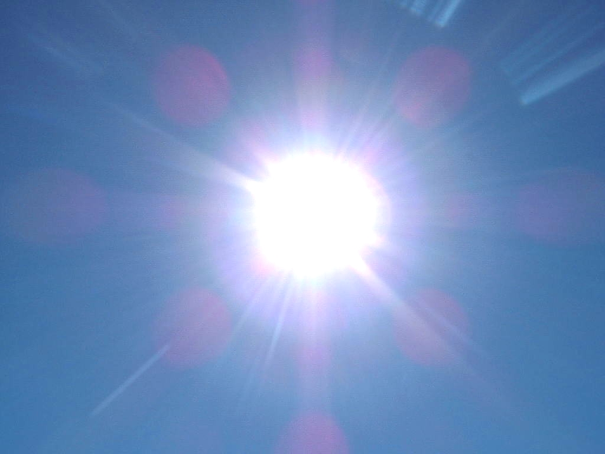

轩辕十四（α Leo /狮子座α）为星官轩辕的第十四星，是狮子座最明亮的恒星（主星），英文名Regulus，也是全天空二十颗最明亮的恒星之一。
轩辕十四是一颗白色主序星，距离地球约77.5光年。在地球上看它位于狮子座的“心脏”位置。轩辕十四被认为是最黯淡的1等星，因为排在它之后的弧矢七的视星等为+1.5等，被天文学界视为是一颗2等星。
轩辕是中国古代帝王黄帝的名字，他被认为是中华民族的始祖。轩辕共十七星，形状如黄龙蜿蜒与天际之上，其最亮星十四星因在五帝座旁，多借指皇后。
Regulus在拉丁语中是“王子”或“小国王”的意思。希腊语的变体Basiliscus及Qalb Al Asad也被使用来称呼轩辕十四，Qalb Al Asad是从阿拉伯语 قلب الأسد qalb演生出来的，意为“狮子的心脏”。
轩辕十四是最靠近黄道的一颗亮星，因此不仅经常会被月球 掩蔽，偶尔还会很罕见的被水星、金星和小行星掩蔽。轩辕十四上一次被行星掩蔽是在1959年7月7日，下一次将在2044年10月1日，而且这两次都是被金星掩蔽。由于轨道交点的位置，在未来的数千年内都不会被其它的行星掩蔽。
预测在2014年3月20日轩辕十四会被(163) 庶女星掩蔽[1]。此一事件可见的地区在美国从纽约市至奥斯威哥，以及向西北延伸至加拿大安大略省的柏维和北湾，路径宽度大约是40英哩[2]。
2005年10月19日，(166) 赭女星掩蔽轩辕十四的事件，从波多黎各、西班牙、意大利到希腊，总共有12位观测者观测。详细的资料在http://www.euraster.net/results/2005/index.html#1019-166。
虽然在北半球的黄昏最适宜观测轩辕十四的时段是晚冬和春季，但除了8月22日前后一个月的时间会因为轩辕十四接近太阳而不能观测，在一年当中其它的夜晚都可以找到轩辕十四[3]。对地球上多数的观测者来说，轩辕十四偕日升的时间出现在9月的第一个星期。每隔8年金星也会在这颗恒星偕日升的时候在附近徘回；上一次是出现在2006年。轩辕十四的主星是轩辕十四A，质量大约是太阳的3.5倍，并且是一颗年龄只有数亿岁的年轻恒星。它的自转非常快速，周期只有15.9小时，因此使它的形状高度的扁平 [4]。这种结果造成所谓的重力昏暗：轩辕十四的光球在两极明显的比赤道热，表面的单位面积亮度在两极比赤道亮五倍。如果自转的速度再加快16%，这颗恒星的引力将不足以提供足够的向心力，使它凝聚，它将会被撕裂而不会凝聚在一起。
轩辕十四是包含4颗恒星的多星系统。轩辕十四A包含一颗光谱类型为B7V的蓝色主序星，和一颗至少有0.3太阳质量，可能是白矮星的伴星环绕着。这两颗恒星以大约40天的周期环绕着共同的质心。由于主星极其扭曲的形状，所以不能忽略长期轨道摄动的影响，例如它们的轨道周期，就不能以纯粹的二体运动开普勒轨道来处理相对的轨道运动。换言之，开普勒第三定律，它只适用于两个质点，不适用于主星高度变形扭曲的环境。
在距离轩辕十四A4,200天文单[来源请求]是有着共同自行运动的双星，分别被标示为轩辕十四B和轩辕十四C，这一对在HD星表的序号是HD87884。第一颗的光谱类型是K2V，它的伴星可能是M4V[4]。这一对联星的轨道周期是2,000年，相距大约100天文单位[来源请求]。
轩辕十四是天空中21颗最亮的恒星之一，它的视星等为+1.35等，主要是轩辕十四输出的光。如果将轩辕十四B独立来观察，使用双筒望远镜可以观察到它的光度是+8.1等，而它的伴星轩辕十四C是+13.5等，是三颗恒星中最暗的，需要大口径的望远镜才能直接看见。轩辕十四A本身是光谱联星：第二颗恒星因为比主星暗淡而不能直接看见。BC对与A的角距离为177弧秒，使用业余的小望远镜就能看见。
轩辕十四是大约前3000年的波斯占星学家所认定的4颗王者之星（Royal stars）之一。它也是中古时代占星学家的15颗伯利恒之星之一，与花岗岩、艾草有关，卡巴拉（Kabbalah）的符号则类似一头野兽[2]。